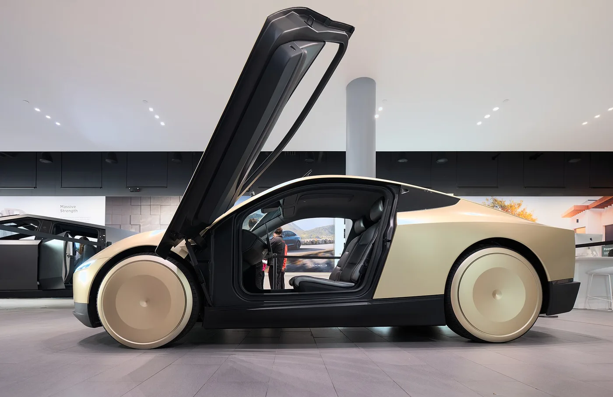
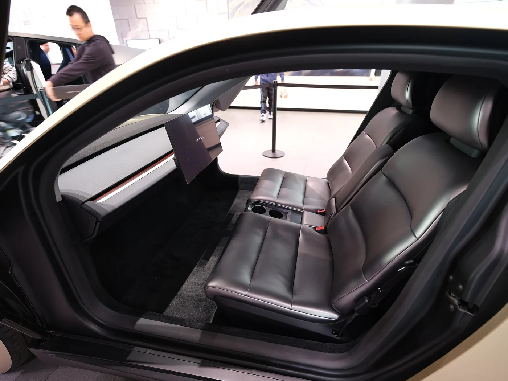
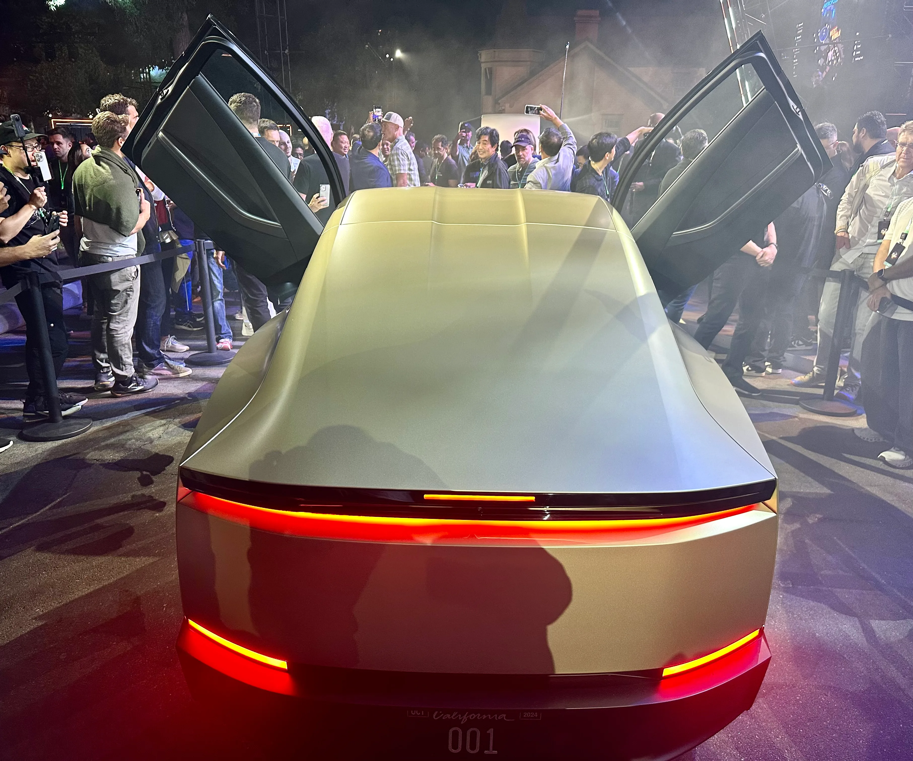

▲ 테슬라 사이버캡. 2026년 9월 4일 미국 텍사스 오스틴에서 상업 운행을 공식 시작했다 ⓒ 테슬라
이르면 8월 말로 예고됐던 테슬라의 무인 로보택시 '사이버캡'이 2026년 9월 4일 미국 텍사스 오스틴에서 상업 운행을 공식 시작했다. 운전대와 페달이 아예 없는 2인승 차량이 실제 도로에서 요금을 받는 서비스로 전환된 것이다. 같은 달 중순에는 베이징·상하이 등 중국 여러 도시에서 판매 없이 기술을 선보이는 전시 행사도 예정돼 있다.
1. 오스틴 — 예고가 현실이 됐다

▲ 사이버캡 측면. 오스틴에서는 현재 45대가 등록돼 운행 중이다 ⓒ 테슬라
사이버캡의 오스틴 상업 운행은 갑작스러운 발표가 아니다. 앞서 테슬라는 이르면 8월 말 오스틴 로보택시 서비스에 사이버캡을 투입하겠다고 예고했고, 현지 응급요원을 대상으로 한 차량 취급 교육까지 사전에 진행한 바 있다. 오스틴에서는 이미 세이프티 모니터가 탑승하는 모델Y 기반 로보택시가 운행 중이었는데, 사이버캡은 이와 달리 처음부터 운전대와 페달 자체가 없는 전용 설계 차량이라는 점에서 결이 다르다.
2. 제원 — 가벼운 차체, 라이다 없는 자율주행

▲ 사이버캡 실내. 운전대와 페달이 없는 2인승 구조다 ⓒ 테슬라
| 항목 | 사양 |
|---|---|
| 좌석 | 2인승 |
| 배터리 | 47.6kWh |
| 공차중량 | 1,412kg |
| 주행거리(실험실 기준) | 673km |
| 전비(시험실 기준) | 100km당 10.2kWh |
| 자율주행 센서 | 카메라 8대 (라이다·정밀지도 미사용) |
사이버캡은 라이다 센서나 사전 제작된 정밀지도 없이, 8개의 고해상도 카메라만으로 자율주행을 수행하는 테슬라 특유의 '비전 온리' 방식을 그대로 따른다. 배터리는 47.6kWh로 일반 승용 전기차보다 작지만, 차체가 가볍고(1,412kg) 2인승으로 설계돼 실험실 기준 673km의 주행거리를 확보했다. 테슬라는 운영 규모가 커지면 마일당 운영비를 0.20달러까지 낮출 수 있다고 보고 있는데, 이는 업계 평균의 약 10분의 1 수준이다.
3. 중국 데뷔 — 팔지는 않는다

▲ 사이버캡 후면. 9월 중순 베이징·상하이 등에서 전시 행사가 예정돼 있다 ⓒ 테슬라
9월 중순 예정된 중국 데뷔는 판매나 상업 운행과는 무관한, 순수 전시 목적의 행사다. 베이징·상하이 등 여러 도시에서 사이버캡의 디자인과 기술을 선보이는 데 초점이 맞춰져 있다. 중국은 로보택시 규제가 지역별로 엇갈리고 라이다 기반 자율주행 기술을 가진 현지 업체들이 다수 포진한 시장인 만큼, 테슬라의 카메라 전용 방식이 실제 상용화로 이어지기까지는 시간이 걸릴 것으로 보인다.
4. 앞으로 지켜볼 것들

▲ 테슬라 매장에 전시된 사이버캡. 걸윙도어를 연 모습으로, 오스틴 상업 운행 차량과는 별개의 전시용 개체다 ⓒ 테슬라
사이버캡의 오스틴 상업 운행이 실제로 안정적인 서비스로 자리 잡을지, 그리고 45대에서 얼마나 빠르게 규모를 늘려갈 수 있을지가 다음 관전 포인트다. 아울러 안전요원 없는 완전 무인 운행 확대와, 다른 도시로의 서비스 확장 시점도 함께 주목해야 할 부분이다.
5. 정리
체크포인트
- 사이버캡은 오스틴에서 실제 상업 운행을 시작했으며, 아직 45대 규모의 초기 단계다.
- 중국 데뷔는 전시 목적일 뿐 판매·상업 운행 계획은 없다.
- 라이다 없는 카메라 전용 자율주행 방식이 실제 도심 환경에서 어떤 안전성을 보일지가 핵심 관전 포인트다.